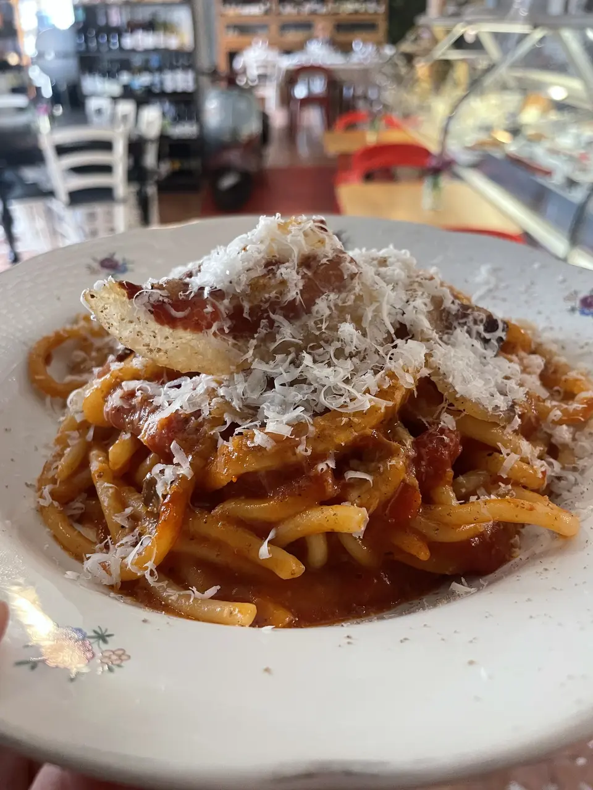

Menu

Dish names are in Italian, each with a short description in English. Prices in euros. Our wines are natural wines from Lazio: ask our staff which ones are open by the glass.
Tagliere 4 salumi e 4 formaggi per due
19 €for twoBoard of 4 cured meats and 4 cheeses, for two
Tagliere di soli caprini per due
16 €for twoGoat's cheese board, for two
Tagliere rarità del Lazio per due
24 €for twoBoard of rare Lazio specialities, for two
Piatto di prosciutto di Mangalitza
18 €Plate of Mangalitza ham
Tagliere di soli formaggi 4 latti per due
16 €for twoCheese board from four kinds of milk, for two
Tagliere di mortadelle di maiale nero e mortadella di nostra produzione
14 €Mortadella board: black pig mortadella and our own mortadella
Prosciutto di Bassiano e mozzarella di Bufala di Amaseno
14 €Bassiano ham and buffalo mozzarella from Amaseno
Prosciutto di filiera, prosciutto di Bassiano Affumicato e prosciutto di manzo
18 €Supply-chain ham, smoked Bassiano ham and beef ham
Tiella di Gaeta con polpo
11 €Tiella from Gaeta, a filled savoury pie, with octopus
Tiella di Gaeta con broccoletti e salsiccia
9 €Tiella from Gaeta with broccoli rabe and sausage
Tiella di Gaeta con scarola e olive itrane
9 €Tiella from Gaeta with escarole and Itri olives
Supplì d’orzo con pomodoro bio e fiordilatte
6 €Barley supplì, fried rice-style croquettes, with organic tomato and fior di latte
Tartare di manzo mantecata con tuorlo d’uovo bio, cipolla caramellata, maionese fatta in casa e alici di Gaeta
18 €Beef tartare with organic egg yolk, caramelised onion, homemade mayonnaise and Gaeta anchovies
Pappa al pomodoro con mozzarella di bufala di Amaseno e salsa al basilico
13 €Tomato and bread soup with Amaseno buffalo mozzarella and basil sauce
Lingua di bovino adulto alla nizzarda con salsa verde
14 €Beef tongue, Niçoise style, with green sauce
Spaghettone fresco pastificio Secondi all’amatriciana
13 €Fresh spaghettone from the Secondi pasta makers, amatriciana
Rigatone alla carbonara con uovo bio e guanciale di filiera DOL
14 €Rigatoni carbonara with organic egg and DOL supply-chain guanciale
Finifini all’uovo con 3 pomodori arrosto
14 €Finifini egg pasta with three roasted tomatoes
Picio fresco acqua e farina con ragù bianco di mangalitza al profumo di ginepro
17 €Fresh pici, flour and water, with white Mangalitza ragù and juniper
Gnocchi di patate con sugo Garofolato alla verolana
16 €Potato gnocchi with garofolato sauce from Veroli, slow-cooked with cloves
Spaghettone baccalà, zucchine trifolate e olive itrane
15 €Spaghettone with salt cod, sautéed courgettes and Itri olives
Pollo ciociaro con peperoni di Ladispoli alla romana
20 €Ciociaria-style chicken with Ladispoli peppers, Roman style
Coda di bovino adulto stufata alle erbe di campo con peperoncino fresco
22 €Oxtail stewed with wild herbs and fresh chilli
Baccalà gratinato al forno, pomodoro schiacciato, capperi e prezzemolo
20 €Oven-baked salt cod with crushed tomato, capers and parsley
Agnello sabino al forno con patate e il suo fondo
24 €Roast Sabina lamb with potatoes and its own jus
Polpette fatte in casa al sugo di pomodoro
16 €Homemade meatballs in tomato sauce
Trippa alla romana profumata alla mentuccia
13 €Roman-style tripe with wild mint
Coratella d’abbacchio
13 €Coratella: suckling lamb's heart, liver and lungs
Margherita
9 €Pavlova with citrus and white chocolate namelaka, citrus curd and orange sauce
Profiterole
9 €Choux buns filled with zabaione and vanilla cream on a dark chocolate crunch, with cocoa glaze
Tiramisù
8 €With homemade savoiardi, pasteurised mascarpone cream and Marsala
Zuccherine
5 €Red wine ring biscuits served with zabaione
Crostata “Sora Loci”
6 €Tart made with lard and sour cherry jam
Dishes change with availability. Allergies or intolerances: please ask our staff.